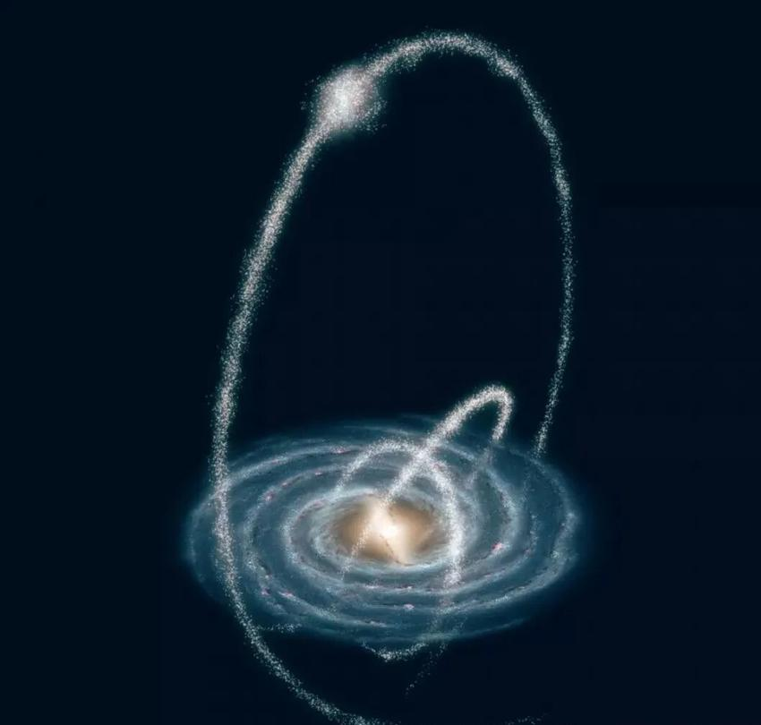
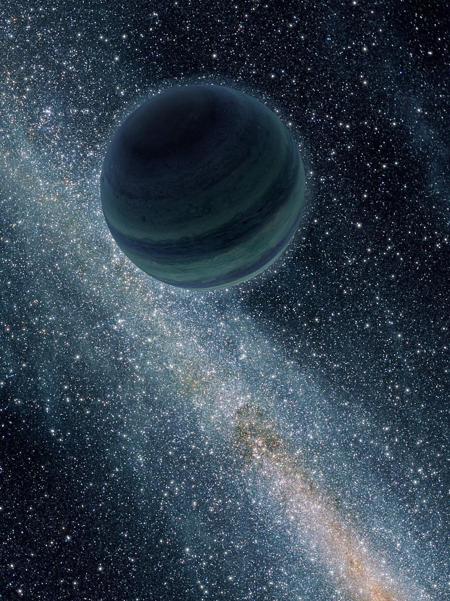
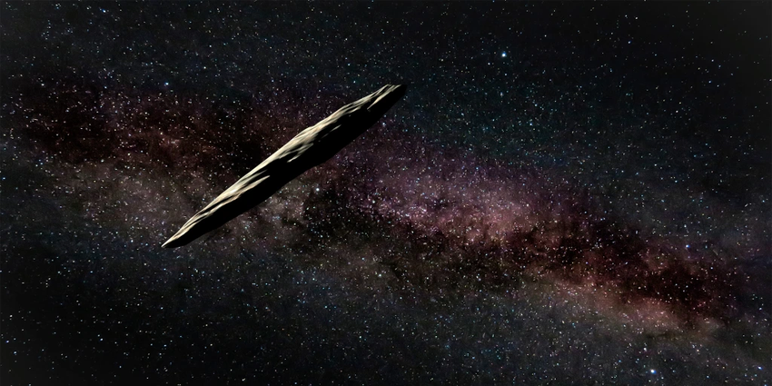
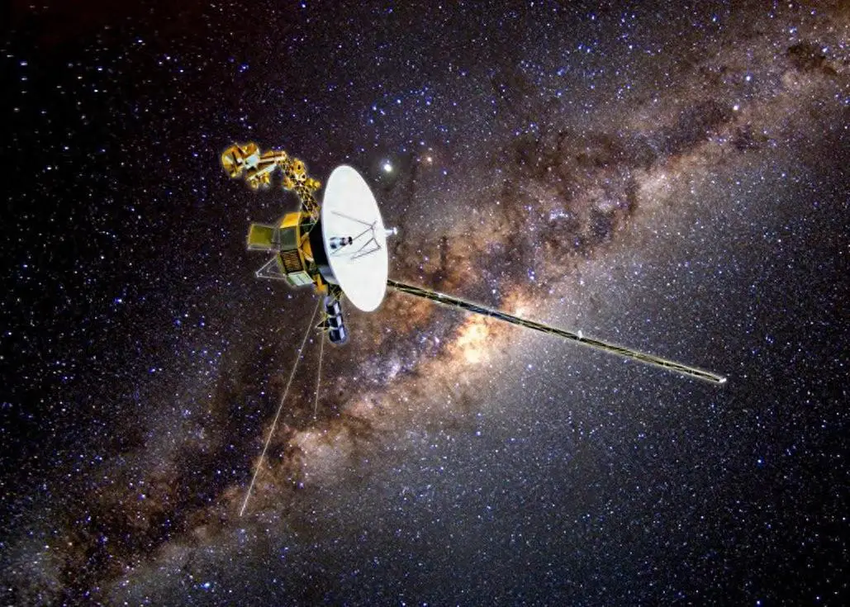

1.1 银河系星流
想象一下，一小撮成百上千万颗流浪恒星，无声的亿年尺度为单位环绕着曾经的宿主星系旋转。像溪流，又像抛出星系的眼泪。
星流（英语：stellar streams）是沿着一条狭长轨道围绕星系运动，由众多恒星组成的链状结构，是球状星团或者矮星系受到较大星系引力的巨大潮汐作用而逐渐变形、瓦解、撕裂形成的。截至2007年，已经在银河系中发现了十余个星流，由几千到几亿颗恒星组成，跨度从数万光年到数百万光年不等。

1.2 流浪行星
这是人类首次可靠地观测到一颗地球大小的“流浪行星”，一个未被任何恒星束缚、自由漂浮在星际之间的天体。
星际行星（Interstellar planet），又称为流浪行星（Rogue planet）、游牧行星（nomad planet）、自由浮动行星、孤儿行星（Orphan planet）、孤独行星（Lonely planet），粗略地说是不绕任何恒星公转，却只具有行星质量的行星。它们可能是受到其他行星等天体的引力影响而被抛出原本绕着公转的行星系统的行星，或是在行星系统形成期间被弹射出来的原行星，以致流浪于星系或宇宙之中。2011年科学家利用重力微透镜法首度证实星际行星的存在，并推测银河系内木星大小的星际行星数量有恒星的两倍之多。

File: Alone in Space - Astronomers Find New Kind of Planet.jpg - Wikimedia Commons
1.3 奥陌陌 星际天体
千光年到千万光年尺度的星际喷泉，星系比起来就好像山脚下的石头。
奥陌陌（ʻOumuamua，“先探之人”），原定名 1I/2017 U1，是已知第一颗经过太阳系的星际天体。它于2017年10月18日（UT）在距离地球约0.2 AU 处被泛星1号望远镜发现，并在极端双曲线的轨道上运行。起初它被认为是一颗彗星，但经过长时间观测研究后，发现其不具有彗发构造，也不是小行星。

1.4 旅行者
旅行者号探测器。
旅行者1号（Voyager 1）是美国国家航空航天局（NASA）研制的一艘无人外太阳系空间探测器，重825.5kg，于1977年9月5日发射，部分功能截至目前依然正常运作，并持续与NASA的深空网络通信。它是有史以来距离地球最远的人造飞行器，也是第一个离开太阳系的人造飞行器。受惠于几次的引力加速，旅行者1号的飞行速度比现有任何一个飞行器都要快些，这使得较它早两星期发射的姊妹船旅行者2号永远都不会超越它。它的主要任务在1979年经过木星系统、1980年经过土星系统之后，结束于1980年11月20日。它也是第一个提供了木星、土星以及其卫星详细照片的探测器。2012年8月25日，“旅行者1号”成为第一个穿越太阳圈并进入星际介质的宇宙飞船。截至2024年12月止，旅行者1号正处于离太阳约166.28 AU 的位置，是离地球最远的人造物体。
